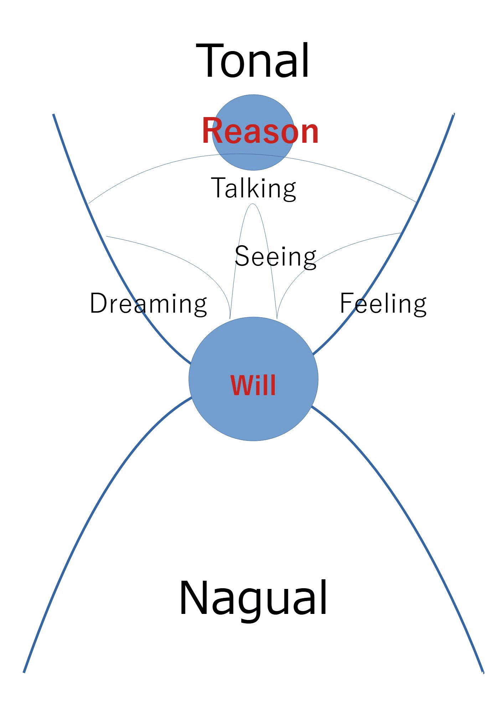

Nagualism(Mexican Sorcery)

| the tonal | The tonal is everything we see including ourselves and the world. The tonal does not create anything. The tonal only witnesses and evaluates. Like an island in the sea, the tonal is born from the nagual. The tonal begins with our birth, and the tonal ends with our death. |
| the nagual | The nagual is something that cannot be expressed in words. The nagual is power and the nagual creates the tonal. When we die, everything, the senses,reality, the self, etc. is dispersed and floats in the nagual. |
| reason and will | If we look at ourselves as individuals, there are two points :reason and will. Reason perceives only the tonal, but will is at the point where both the tonal and the nagual intersect. So, will can perceive both the tonal and the nagual. According to nagualism, will is in the position of the abdomen. When we are born, we are placed in a bubble called the tonal. At first this bubble is open, but as we grow and our reason develops, it gradually begins to close, and eventually we are trapped within it. The bubble is our perception, and what we see within its round walls is ourselves. In order to break out of that tonal bubble, we have to organize our tonal. We must purify our ego-consciousness and attachments within our tonal. Additionally, we need to harmonize our outer appearance with our inner mind. This creates a strong tonal and allows it to shrink easily. When the bubble is opened from the purified side of the tonal, half of the bubble will be occupied by will, not by reason. This gives us two points—both reason and will—allowing us to use the power of will. |
| talking | Reason is only connected with talking, |
| dreaming | Will is connected with dreaming. By connecting with will, we can do astral projection. |
| seeing | Will is connected with seeing. Seeing is to feel everything as energy. The human body is essentially made of energy, but we think of it as solid through our reason. By seeing, we can feel the energy flowing through the body. |
| feeling | Feeling is to intuit truth. When we are able to connect with our will, we are able to know the truth of things as intuition, and things will go the way we want them to go. |
| the assemblage point | According to Nagualism, we and everything around us are emanations of energy. When a sorcerer looks at a human being as energy, the human being appears like an egg-shaped cocoon. On the surface of the cocoon, there is a glowing part called the assemblage point. This point is where the human cocoon and the energy outside the cocoon unite to generate perception. |
| the first attention | The glowing part on the surface of the cocoon is called the first attention. We perceive this real world through this first attention. |
| the second attention | On rare occasions, this glowing part can move inside the human cocoon, forming what's called the second attention. According to Nagualism, the world is multidimensional, like the skin of an onion. By moving the assemblage point and changing the level of consciousness, another world can be perceived. When the assemblage point moves to the second attention, we become capable of astral projection and perceiving worlds beyond our ordinary reality. We typically deplete our own energy, leaving little in our cocoon, which prevents the assemblage point from shifting to the second attention. However, Nagualism teaches that consistent practice allows energy to be stored in the body's chakras. As you continue practicing, your assemblage point will slowly but steadily move further inside the cocoon, enabling astral projection. |
| the third attention | The force that makes the cocoon glow is called intent, or spirit. By storing energy within yourself, you connect with the intent that is deep within the cocoon. With that intent, not just a part of the cocoon but the entire cocoon can glow; this is called the third attention. When we die, our present consciousness is eventually dispersed, and we are destined for reincarnation. However, Nagualism teaches that if we can attain the third attention, we can preserve our present consciousness forever after death in the multidimensional world. |
| stalking | Stalking is a training method to store energy. Nagualism teaches us to practice the seven arts of stalking. As you practice stalking and conserve energy, your perception slowly but steadily shifts from the first attention to the second attention, enabling you to do astral projection. |
| choose your battlefield | The first art of stalking is to choose your battlefield. Think about all the things you are afraid of in the future and how you can deal with them in advance. Then, document them or record them. Once you've done that, you'll no longer spend energy worrying about them. |
| discard everything that is not necessary | The second art of stalking is to discard everything that is not necessary. |
| put your life on the line in every battle | The third art of stalking is to put your life on the line in every battle. Nagualism utilizes the concept of death as a means of gathering energy, as people naturally gather energy in times of crisis. |
| relax and fear nothing | The fourth art of stalking is to relax and fear nothing. Fear stems from being controlled by others or from attachments to self-importance, money, and similar concerns. When you free your energy from such things, fear naturally disappears, allowing you to live a relaxed life. |
| retreat for a moment, when faced with a difficult situation. | The fifth art of stalking is to retreat for a moment, when faced with a difficult situation. When you practice stalking, you are able to free your energy from your self-importance , so that you can retreat without worrying about what others think of you. Instead of clinging to a losing battle, you can temporarily step back, and you can rethink your strategy. |
| compress time | The sixth art of stalking is to compress time. When you conserve energy for yourself by stalking, you feel time compressed. On the other hand, when energy is dissipated by being trapped outside yourself, you lose yourself and your consciousness becomes blurred. |
| not to push yourself to the front | The seventh art of stalking is not to push yourself to the front. If you place yourself in the foreground, you will attract the attention of others, leading to unnecessary expenditure of energy and effort. You must avoid attracting attention and instead focus your energy solely on what you wish to accomplish. |
| petty tyrant | In Nagualism, the term petty tyrant describes a person with strong ego-consciousness and obsession who shows no regard for harming others. It is considered fortunate for a practitioner to encounter a petty tyrant. When faced with one, you must either obey them or gather your own energy and respond strategically. For this reason, a practitioner is compelled by the petty tyrant to employ the art of stalking and accumulate energy within themselves, which ultimately leads to their growth. |
| the recapitulation | The recapitulation is a training method for remembering your past experiences. First, write down all the people you have met, and recall all the events associated with them. This isn't merely a practice of remembering past events; you must recall all the emotions you felt at the time as if you were re-experiencing the event. |
| the outer astral body | According to Nagualism, people's astral bodies float outside their physical bodies. Usually, in everyday life, the outer astral body clings to other people's astral bodies and becomes fragmented. To complete the astral body, you must gather these fragmented pieces of the astral body back to yourself. |
| the purpose of the recapitulation | Similar to the Buddhist concept of karma, Nagualism teaches that human energy is bound to people and events beyond time and space. Through recapitulation, you can free the energy that is bound across time and space. |
| energy lines | As you gather energy through recapitulation, you will feel energy lines rising from the abdomen along the spine. These energy lines can be used to open chakras in the abdomen, heart, and head. As the energy lines open the chakras, you can merge the inner energy lines with the astral bodies floating outside the body. In this way, Nagualism explains that astral projection can be achieved and the astral body completed. According to the teachings of Nagualism, by continuing the practice of recapitulation, one is liberated from past attachments, the astral body is constructed, and one gains the ability to do astral projection. Ultimately, one can be liberated from reincarnation. |
| intent | According to Nagualism, intent is the source of all things and the force that makes the impossible possible. When one is connected to intent, one can use it to realize their desires. To manifest your desires, your connection to intent must be strong. If this connection is strong, you'll be able to use your intent by simply focusing on what you want. First, you command your desire to yourself, then you repeat the command. By repeating it, the command becomes the command of the source of all things—intent—and then the command manifests. |
| stopping the internal dialogue | In Nagualism, the training method of stopping the internal dialogue is frequently emphasized. It involves silencing your thoughts for half an hour or an hour to achieve inner silence. In this practice, you must halt your internal dialogue with a strong will, just as you would learn a language. This frees energy from reason, allowing it to be gathered into intent. Since intent is the opposite of reason, it's necessary to stop the internal dialogue and liberate energy from rational thought. |
| the six abstract cores | Nagualism explains how we are connected with intent as the six abstract cores. By understanding the six abstract cores, we can strengthen our connection with intent. |
| the manifestation of the spirit | The first abstract core is called the manifestation of the spirit. When the connection between you and intent is activated, the spirit (or intent) can manifest to you through intuition. For example, you may have experienced times in your life when things improved because you acted on your intuition. This is a manifestation of the spirit. |
| the knock of the spirit | The second abstract core is called the knock of the spirit. In this, you recognize the spirit's intervention in your life through a series of events. For example, there may have been a time when you struggled financially, and precisely then, you happened to receive some money. Or perhaps you escaped a crisis through a particular coincidence. This is the knock of the spirit. |
| the trickery of the spirit | The third abstract core is called the trickery of the spirit. This involves intent playing a trick on you; the spirit makes you behave differently than you normally would, fostering your growth. For example, you may have faced a certain ordeal in your life, and as a result, you might have grown significantly. This is the trickery of the spirit. |
| the descent of the spirit | The fourth abstract core is called the descent of the spirit. It is an experience in which the spirit reveals itself to you. Specifically, you have the mystical experience of seeing fibers of light. Nagualism teaches that the essence of the real world is made up of such fibers of light, which are described as innumerable, vibrating, alive, aware, and overwhelming pressure. |
| the requirements of intent | The fifth abstract core is called the requirements of intent. The name shifts from 'spirit' to 'intent' at this abstraction because it represents an action from you towards intent, rather than intent acting upon you. In the requirements of intent, you can use the shine of your own eyes to invoke intent. Intent is light and is connected to the shine of the eyes. For example, you can relive a mystical experience by intending the specific shine of your eyes associated with that past experience. |
| handling intent | The sixth abstract core is called handling intent. In this stage, if you have sufficient energy, you can connect with intent completely at will. Intent is referred to as silent knowledge because it encompasses wisdom beyond ordinary thinking. There is no dualistic distinction between subjective and objective. Thus, when you fully connect with intent, you may feel as if you are in two places at once. |
| What intent is | According to Nagualism, Intent is the force that causes a portion of one's energy emanations to glow, and it is also the force that creates one's perception. By connecting with intent, one can also cause the inner parts of one's energy emanations, which don't normally glow, to illuminate. In this way, one can achieve astral projection and perceive the world of another dimension. Furthermore, by connecting with intent, one can make all parts of one's energy emanations glow. Ultimately, this can lead to liberation from reincarnation. |